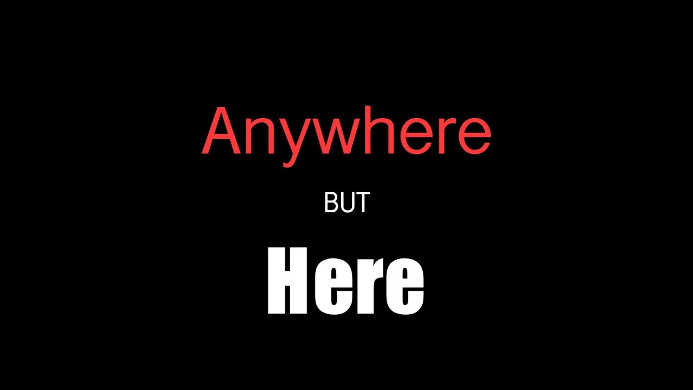

STORIES
STORIES

Long Distance Phone Call
Marty B
You can talk to the dead on the pay phone in front of Seventh Street Market in West Oakland.
There is also a donut store where they sell burgers, and a check cashing store in the small strip mall, but everybody references the market when
talking about the Phone. I didn't tell my Dad we were going to California so he could talk to his dead wife, my Mom, until we hit Olympia, Washington.
“That is the stupidest goddamn thing I have ever heard of! We are driving to Oakland
to have a seance on a pay phone?” He said when I told him our actual destination. "I thought we were going to a baseball game!”
“Dad, come on, I want to do this. Please, come along and we’ll see how it goes. And then we’ll see your
Mariners play the Oakland A’s.”
Although I always think of him as so much bigger than me, we were about the same size now, he had lost so much weight from stress over the past year. He spent all day on his recliner, alone, he even
stopped working in his garden. My dad had nothing else to do, and no matter what he said, he has always loved car trips. He needed something to shake him up, and I knew speaking to Mom again would do it.
He looked over at me, “Don’t
you have work? Did you lose your job again!” His face was turning red under his battered Seattle mariners cap.
“I had a difference of opinion with my Bruce.-” I started.
“-Let me guess, you were right, and he was wrong.”
“He
was a sexist asshole who wouldn’t know Python if it was actually a snake and bit him.” I shouted at the windshield.” I write good code, and he just-” I glanced at my dad, he was shaking his head. “Yes, I was right, but he's the Boss, so-”
“-You always blame someone else, your school or your boss or me. Maybe, just maybe- it is you?"
“You just don't understand! I don’t need your advice!”
That ended our conversation, but I knew how to get him engaged.
I gave my
Dad a map, my phone to look up yelp reviews, and the real destination. To make him work a little bit I gave him some parameters- only six hours of driving a day, restaurants had to be Mexican, Indian or Greek, and we had to fit in two
tourist sites per day. Once I set it up that way, he was in. He had the map spread out and outlined our route. We could have kept going south till we hit the bottom of Argentina. He was in his element.
I remember when I was young going
on road trips all the time. Or maybe I remember talking about the road trips. He would plan out detailed itineraries, with each day's miles, gas and restaurant stops picked out in advance. Pretty amazing as this was all pre-internet. Dad
would go on and on about what motel we would stay at, what we were going to see when we got there, how long we would stay, every little bit. The funny part was he was usually so happy before we left, and then miserable on the trip. Because
of course, life does not follow such pre-laid plans. I would need to make an unplanned bathroom stop or the restaurant is closed or the motel full. And then once one thing got off track, then the issues snowballed and as he would day,
‘why did I even plan at all!’
He understood anything mechanical, however he could not understand his daughter. I couldn’t be fixed like a fan motor. We have not really gotten along since high school. When I was little, I was the son
he never had, throwing the ball, watching baseball together. But when I realized I preferred girls to boys, and made some poor choices, our relationship took a left turn. My Mom understood my need to rebel, but Dad never did.
He worked
at Microsoft, in facilities, for my whole life. He retired last year to take care of Mom, and that is when things started going sideways. Her leukemia diagnosis gave him a reason to plan, to map out her recovery. When the cancer did not
follow the plan and Mom passed last month, he got lost. I had to do something.
In Redding, California, my Dad picked a gas station several miles out of the way. He had identified it as the lowest cost gas for the next 100 miles. As
we pulled into a line of cars waiting to enter the gas station my phone rang in my Dad's hand. He showed me the caller ID, it read ‘Rosie’.
Damn. I grabbed it to answer.
“Hey, Rosie-”
-”No, Rocko is fine at
my place, he is used to it now-”
-”No, do not bring him back to your apartment!”
-”Rosie, I’ll be back in 2 days! That is kidnapping! He will be fine where he is!”
“No, but-"
The phone call ended and I dropped it in the
cup holder.
“It was Rosie.” I begin.” I didn’t tell you. We broke up. I moved out. Rosie is getting the apartment, and I am getting Rocko- except she just took him back”
“The cat?” my Dad said.
The line moved up and I eased
toward an open gas pump.
“Rosie thinks the apartment and the cat go together, and really Rocko does too. But I don’t want to give in. Rosie is the reason we broke up! And, I don’t like living alone, so it is good to have Rocko there.
We were together for three years- I don’t know if I can find someone again.” I pause to breathe out. “I feel lost, I need to map out my next step, I-”
“-Pop the hood” My Dad said as if we were not talking at all. He had opened the
car door before the car had completely stopped.
He checked the oil, checked the belts, and looked at the tires.
I just watch him exasperated. He gets back in and looks at me,
“Did you put in the gas?”
“Dad, you don't listen!”
“Listen to what?”
“Dad, I was telling you about how I feel!”
“How you feel- about the cat?”
“Oh my goodness.” I got out to fill up the gas.
Leaving the gas station, I switched on the radio, loud. ‘Faith,’ by George Michael
came on.
“'Because I gotta have faith, faith, faith…”
I was singing along, when all of a sudden, my Dad switched it off. “Do you hear that?”
“Dad, what the F- are you doing!” I switched the radio back on, louder.
My Dad
switched it off again, “No listen!"
“You turned off the radio, what can I listen to!”
“The engine, the engine! Do you hear that? What kind of gas did you put in?”
There was a faint regular knocking sound coming from the engine.
“The cheapest, isn't that why we went to that random gas station?”
“87!?” My dad said, “you have to put in 89, or 91 for your car! The engine will knock.”
“What are you talking about ‘knocks’?” I asked.
“ You put in the wrong
gas Gina, oh goodness, we are going to have to listen to this for 300 miles!”
I looked at my Dad and shook my head. “Well how about George Michael then,” and I turned the radio back on.
We got to West Oakland on Friday night and
I smelled the San Francisco Bay. It reminded me of Lake Sammamish. It's not a good smell. My Dad had picked out a motel right across from the Port. This was the industrial part of Oakland and was had few houses, mostly factories and large
buildings.
I went for a walk by myself that night. Amazing murals covered many of the buildings. One building was entirely painted sky blue with waving trees, mythical animals and tree-people dancing around it. I stopped in front of a huge mural,
a fantastical map of the universe all flowing from the open heart of a man floating in rapture. Right in front of it was a burned out shell of a car.
If there was any place that could have a Phone to speak to the dead, it would be
here. The sense of anticipation was building in me.
Early Saturday we got to Seventh Street Market, and Dad asked me to drive around the block one more time before we pulled into the small parking lot.
“Dad, it is a real thing.
I heard about it on a podcast. ‘Mystical Dimensions’.” We were both staring at the words spray painted on the wall in smoky gray graffiti letters, ‘Speak to the Dead’. “The episode talked to people who had spoken on the phone to their
loved ones who had died.” I was not explaining this well.
Inside of a plexiglass phone booth missing its doors, a dilapidated Pacific Bell payphone waited. I can't remember the last time I saw a pay phone.
“So, I guess that is
it. Do you want to talk on the Phone?” I said without turning.
He didn’t answer. From the car we watched people go into the market, the donut shop and getting cash for their payday checks.
“Do you want a donut?”
“No." He just
looked away.
Everything in my life was going sideways, Gina, gone. The job, gone. And it was a good job, about to go IPO. Until I lost my temper with Bruce. Damn, what am I doing? Dad might be right, it could be me. Mom used to listen
to me, give me advice when I screwed up. I don’t know how to talk to my Dad. I want to have a connection to him again. I had hoped this road trip would be a chance to connect, but nothing had changed.
“Hey. I’ll go.” I got out of the
car and walked up to the beat-up pay phone. A large portion of the bottom of the phone is missing. Was this a good idea? Maybe I was trying to escape my own problems. For the first time, the idea of a pay phone to talk to the dead seemed
really dumb. This whole trip has been a bust, another well planned, poorly executed trips.
I pick up the receiver, and listen to the silence. Maybe I am supposed to speak first.
“Hello, Mom, I brought Dad…”
While I listened
for a response, I looked inside the market and saw a profile of a woman who looked exactly like my mother. I looked at the receiver in shock and then looked inside again. The dusty phone booth blurred my view into the store.
A strong
wind began to blow and I suddenly became aware of the feeling of the phone in my hand, the ground underneath me. The back of my neck buzzed, I had goosebumps on my arms. The wind swirled trash and leaves into a small dust devil just outside
the booth.
She is at the cash register, I could only see her from the back. The way of she held her head, it was exactly how I remembered mom. Was this possible?
Suddenly I felt the loss of my Mom course through me, the bottom
has been ripped out. She was the only one who I could talk to, who would listen to me. I desperately needed to see her again, to hold her hand like I did at the end when she couldn't get out of bed.
I saw her begin to leave and I turned
to watch the front door. My heart grew with anticipation. A woman of about 30 walks out, her hair style exactly like my Mom had when I was young, but this woman is a stranger. She saw me starting, nodded and walked away. My heart was racing
and I breathed. She was truly gone and the tears' blurred my vision.
“Mom, please help me know what to do with my life.” I hang up the receiver and get back in the car. Another 30 minutes went by and I brought it up again.
“Dad, do you want to try now?”
I see his hands clenched tighter.
“I miss Mom.” I said.
“I do too.”
We watched people from the neighborhood come and go, and then a minivan parked and an entire family got out. Asian,
they are dressed differently than anyone we have seen yet, more corporate than streetwear. A man, a woman holding a baby, and a teenage girl walked up to look at the phone. The young girl looks back at her Mom, and then goes to the pay
phone and picks up the receiver.
I get out of the car, and my Dad does too.
“Excuse me ma’am, are you here for the Phone?” My Dad asks the Mom.
The woman looks over and smiles.
“Yes, We drive down every couple months. Our
son, Ayaka’s little brother, died of cancer last year. Today would have been Yoshi’s birthday, and...” She tears up, and looks down at her sleeping baby.
“My wife passed away last month.” Dad paused and looked around the parking lot.
“Does Yoshi answer back?” Dad asked.
“It depends what you mean by ‘answer’.” The mom gave a soft smile, and then took Ayaka’s place at the phone, followed by the Dad.
Ayaka looked over at us, and then went back inside the phone
booth and picked up the receiver.
““I am sorry for your loss.” The Mom says, as she put the baby in the car seat.
Ayaka hung up the phone and turned to my Dad.
“I asked Yoshi to go get your wife so you can talk to her.”
The family gets in the minivan and drove off.
Finally, my dad walked up to the phone booth. He reached out and picked up the receiver. After a few minutes I watched him begin to sob, his shoulders shaking.
He hung up the phone
and got back in the car.
“Your Mom said you should come live with me, at least until you are back on your feet." He said. "You can even bring the cat.”
“She said that?”
My Dad looked at me and smiled, the first I had seen in
a long time.
“I think we both need to figure out where we are going.”
“OK, Dad. Let’s go see a baseball game. You have the map, show us where we need to go.”
Mom answered after all.
Like
Everlong
Leah RantzAnd then, as it has since the Beginning of it all,
Summer had come again.
The sun burned bright and reassuring from the window in my apartment as it had before. But this time, the warmth couldn’t touch me from my empty bed. The rays
stretched out across the apartment, searching for me. They beckoned me, but I didn’t budge from my side. I faced a gray wall. I wasn’t interested in a new season.
Last summer had been different. I couldn’t wait to get out of bed,
couldn’t wait to run outside to my car. I always seemed to be running late. Maybe it was from the deep, black, thoughtless sleep the sticky nights provided. I would wake up groggy and quickly dash to the gas station to pick up our energy
drinks. Purple one for me, blue one for her.
By the time I would get to the counter, like clockwork, my phone would typically buzz incessantly. I looked away from the cashier to my phone. She never liked to text in just one bubble.
HELLO
IM WAITING HERE
FOR
YOU
As always, I would reply some snarky response like
Sorry are we meeting today?
But she’d catch the sarcasm, despite the text with a middle finger emoji
SEE YOU
IN
10
Then I would head to the boardwalk, the condensation of the sweating drinks wetting my fingers. And I’d turn the corner on 9th and she’d be there waiting expectantly for me on the park bench.
Sometimes she would hop up, guitar
in hand and pretend to bash me over the head with it. Sometimes she’d lay, eyes closed, mouth open dramatically, and pretend to be asleep. One time she hid entirely, and, knowing my routine- crept up and scared me from behind.
Then
we would head to our bench. I’d joke about the guy at the gas station. She’d vent about the traffic. We would take sips of our energy drinks sometimes in complete comfortable silence, watching the tourists begin to clog up the boardwalk.
The sun would hit a certain height in the sky, and we would get to work.
Without warning, always without warning, she would begin to strum on her guitar. I’d throw my lucky bucket hat at our feet. Automatically, I would let my mind
pick up and remember the song and I’d sing. Strangers passed by with smiles, admiring us. Some would entirely ignore us, too wrapped up in wrangling sandy kids. Some would ride by on their bikes, sunglasses on, blazing ahead.
I know
she loved when the dogs would stop by. Especially Dalmatians. Like draws to like, after all. The dogs loved her magic laughter, her excitable seated bouncing, her dimples. Sometimes she would stop our performance entirely simply to pet
a dog, as their owner would toss a tip into our hat.
And so it went, for hours on end. Our skin would redden and sting. We would take our tips and grab lemonades for our raspy voices. Or we would get ice cream and fries at the dock
and vent about the dumb tourists that would feed the seagulls.
If we were feeling particularly lazy, we would stop busking all together and go get margaritas at the Mexican place on 12th. She would flirt with the waiter or waitress,
and, as usual, they would melt for her. Our drinks would be particularly strong.
One time we had gone to the fortune teller on 20th, holding back our snickers as we went through the beaded entrance. The fortune teller had held her
palm and grinned,
“You have a raised Mount of Venus. You’re passionate. It’s easy for you to attract people.”
At this, she turned to me and wiggled her eyebrows. I had scoffed and laid my palm flat on the table for the fortune
teller. Her smile had faltered when she noticed the broken lines on my palm.
The best part of the day typically would be when we would head back to our bench, as the sun would set to lavender. The sweltering heat would break, cooling
the sweat from our foreheads. People would lift their sunglasses from their heads, gazing around without squinting. I always felt our final song was our strongest.
I remembered, one non special twilight, I had looked over at her. She
was strumming her guitar like always. She was smiling at a passerby. She was singing along with the same familiar trail of words. I had felt my chest cave with yearning. I blinked and tried to keep a mental picture of her and the sand
and the sky and the bench. I wanted it burned behind my eyelids like when one looked at the sun for too long. I wondered if anything could ever feel this real forever. If anything could ever be this good again.
The days got colder
and the tourists became fewer. They now were bundled in sweaters. They couldn’t stand and watch for long. One by one, the shops began to pull down their metal doors shut for the season. She took longer to reply to my texts. She always
had a reason.
Sorry I can’t today.
I’m busy.
I’m tired.
Read 10:29am.
Days went by unanswered. Then weeks. The nights grew longer. The bench sat empty. And one day I woke up, and suddenly that familiarity was just gone.
The string had snapped and broke. The song had ended. And I didn’t see her or her dimples or her guitar or her laughter anymore. All I saw was night. All I felt was a yawning stretch of without. I didn’t want to sing along to the songs
in my car anymore. I wanted to ride in silence.
And I wasn’t interested in a new season, in a new summer. I turned my back from the light, curled up in my bed. I remembered this all, staring at the wall.
But I also remembered the
fortune teller again, who had grabbed me by the shoulder, just before we left the shop. I had lingered behind alone, and the teller had looked me in the eyes, a little too deep for comfort.
“You’ve gotta promise not to stop. Don’t
give up,” the teller had pleaded, softly, their voice barely grazing above a whisper. I had laughed a little because I was taken aback. And I had shook the hand off my shoulder. I had not understood the warning because I had not wanted
to.
But the clarity came to me now from my gray bedroom, in the light of a new summer. I groaned and rolled out of bed. I lingered anxiously at the door of the gas station. I only bought the purple drink for me this time and bit back
the familiar pang of yearning.
But then, at the counter, I met the cashier’s eyes. In all my days of coming, I had never noticed they were blue. They crinkled with a familiar smile as they looked back at me, and he greeted,
“Hello!
I was waiting here for you to come back.”
I couldn’t help but grin back.
Summer had come again.
Like
The Maple Leaf Train
Ellen KommelThe metal wheels were grinding against the tracks, shaking the cabin as Ava watched the snowcapped landscape race by through the frosty window. The further North the locomotive crept, the less color there was in the world. Within a few hours,
she watched as though someone leached all the vibrancy out of the trees, giving way to a monochromatic panorama.
There weren’t many people on the train at that time of year. It was a scenic route, and since the scenery had been completely
smothered by a bright, white blanket, it was the perfect place to hide out. That’s what Frank had told her, at least, as he hugged her tightly on the platform while the few people boarding at the same time said their goodbyes to loved
ones.
“I promise, I’ll meet up with you soon,” he had whispered into her ear.
“Are you sure we should split up?” She asked him shakily.
“You’ll be perfectly safe. I’m just going to get them off our trail and I’ll find you where
we planned, okay?” He pushed her away so he could look her in the eye, fixing her backpack strap so it was properly positioned on her narrow shoulder. “You won’t even miss me.”
“I already do.”
The empty seat beside her on the train
was stirring, so she picked up her bag and wandered slowly to the cafe in the next car, bouncing off the seats on either side like a human pinball. She subtly scanned the few faces she passed to see if any looked threatening. Frank had
been working with her on things like situational awareness and now that she was on her own, she was glad he did.
To her comfort, the cafe was empty. It seemed the rhythmic rocking of the train had put most of the passengers to sleep,
but Ava was far too alert to rest. As soon as she picked up the menu, her stomach growled loudly. She couldn’t remember the last time she ate anything.
A lanky young man in an apron appeared from the kitchen.
“Oh, I didn’t realize
anyone had come in! Have you been waiting long?” He had a very disarming Canadian accent.
“I just sat down, actually. No worries.”
“Can I get anything started for you? Tea or coffee?”
“Actually, there’s a burger on your menu
that is calling my name.”
“Excellent choice! It’s the best cheeseburger on the east coast!” With a charming smile, he typed something onto a small electronic device. “Anything else?”
"No, thanks," she answered.
The sound of
the train piercing through the air suddenly grew louder; the car door opened and an older woman walked in and sat down at the other end of the cafe. She had short, curly, grey hair and wore a thick wool coat. She looked like one of those
women who had a "Nana" sticker on the back of her car. Ava watched her out of the corner of her eye while she called the waiter over and ordered a hot tea and a scone. She seemed benign enough.
For the first time in what felt like
forever, Ava was able to take a deep breath and relax as much as her body would allow. The scenery was the same out of the cafe window as it was back at her seat, so she pulled a pen out of her backpack and started sketching the woman’s
face on a paper napkin. She didn’t like to dwell on her past at all; she was much more comfortable pushing all the memories and trauma into the deepest, most unreachable corners of her mind. The only remnants of her dark childhood were
a sketchbook, completely filled with portraits of all the people she encountered during her escape from the foster system and life on the streets, and a weathered, dog-eared copy of Great Expectations. Drawing soothed her—many of the pages
contained the faces of people she just found fascinating, and while she didn’t want to remember the others, young Ava discovered that putting them on paper gave her some power over them, like she trapped them on those pages so they could
no longer hurt her. Over the years, it just became habit. When Chaos’s inevitable ebb and flow favored the latter, she retreated to the few comforts that got her through so many of life’s deleterious moments.
The waiter disappeared
once again into the other room. The woman smiled sweetly and Ava blushed, worried she had been caught drawing her likeness without permission. But the woman didn’t seem to notice.
“You’re traveling alone?” The woman asked.
“No,
my husband is asleep in the other car," she lied.
“Ooo, family vacation?”
“We’re going to see his folks up in Canada.” Ava had come up with a backstory during the first few hours of the ride just in case.
“That’s lovely. How
long have you been married?”
“Four years this February.”
“My husband and I were together for thirty five years. I always hated going to see his parents,” joked the woman.
“Always?”
“They never approved. He was Jewish. I wasn’t.”
“Oh, that must have been hard.”
“We managed.”
The waiter reappeared with a tray hoisted over his shoulder. He stopped at the woman’s table first, delivering her tea and scone,
then sauntered over to Ava to deliver a fresh, steaming hot cheeseburger on a soft brioche bun. The smell wafted up and made Ava’s mouth instantly start watering. The meat dripped oil over the edge of a bed of lettuce and pooled on the
porcelain plate. Before he had even left her side, Ava was deep into her first decadent bite.
“You don’t want any ketchup or anything?” The waiter asked, shocked at the site of such a dainty young woman devouring a big, meaty cheeseburger.
Ava shook her head. It could have been squid and crickets—she would have inhaled anything he put down in front of her. The waiter disappeared again and she took another bite, her eyes rolling back in her head in ecstasy.
“My my, someone
was hungry!” The woman observed.
“Sorry,” replied Ava with a mouthful of greasy top sirloin.
“Surely your husband feeds you!”
“Sometimes,” joked Ava.
The woman lifted her teacup to her mouth and her coat opened slightly,
revealing a large gun hanging from her shoulder. Ava, with a face full of charbroiled beef, set her burger down and struggled to swallow the giant bite. It pushed against the sides of her throat like a clog in a drain. Maybe she didn’t
know Ava saw the gun. Maybe it wasn’t even for her. Maybe she could fake motion sickness and hide out in the bathroom until she came up with a better plan. She glanced around the room as nonchalantly as possible to not raise suspicion.
There were lots of thick, glass bottles behind the bar. Maybe there were some knives, too. The bar was tall enough she could hide behind it. Was there enough time to get to the door before the woman started to fire?
The thoughts raced
through Ava’s mind as the woman set her tea down and stared intensely at her. Ava was so hyper-focused on the woman’s hands, everything else became background noise. The woman moved her hand down and wrapped her fingers around the grip
and Ava began to panic. Just as she lifted the barrel of the gun in Ava's direction, a tall figure pushed the muzzle towards the window, wrapping the strap around the woman’s neck. He pulled her towards the door, opening it swiftly and
tossing her squirming body out onto the snowy landscape.
During all the commotion, Ava had slid down in her seat to take refuge beneath the table. It was reflex, really. The door slammed shut and the sound of the wind died down. A
single set of footsteps approached her table, growing louder as they got closer.
“Just jump out and start punching,” she thought. “Maybe you can catch them off guard!”
The big, black, canvas boots stopped at Ava’s table and turned
towards her. She took a deep breath, then burst out like a wild animal. She started scratching and swinging her arms, but the man caught her and wrapped his arms around her like a straight-jacket.
“Ava, it’s me,” Frank said softly.
She stopped flailing and looked up at him, banging her fists against his dense, thick chest.
“You scared the shit out of me!” She cried. "What are you doing here?!"
Frank hugged her as tightly as he could without breaking her.
“I knew they planted someone on board. I just had to wait them out.” Ava tried to pull away from him, but he was too strong. She let her body go limp in his arms, like somehow that would make him let go. He held her up like it was nothing.
“I'm sorry I didn't tell you. I needed you to appear vulnerable so they'd make a move.”
“You used me as bait?!” She yelled into his shoulder, breathing him in. He smelled like gun powder and tobacco. He smelled like home.
“You
were never in any real danger, I promise!”
She knew he was right: as long as he was around, she was safe. He was the expert, after all. The closer he held her, the more relieved she was to be back in his arms. She couldn’t stay mad
at him. She threw her arms around his neck and hugged him back.
The waiter pushed open the door with his elbow, but upon seeing their embrace, he slowly backed up back into the kitchen to give them some privacy. He didn't even notice
the older woman had skipped out on her check.
Like
Seven Days to Know You
Caroline ConnerStaring out the window of the train, Sammie observed the scenery as it rushed by. It was early fall, the ideal time to be traveling through North Carolina. Though she had not been many places in the world, she doubted anything was as beautiful
as the fiery shades of red and orange draped over the trees outside. Try as she might to enjoy it, a glumness now clung to her.
Only a couple hours into her trip on her way to meet her six-month-old goddaughter and visit her best friend
after a long year away, she received a phone call that they were officially under quarantine with Covid. Sammie almost instantly had the thought to ditch the trip altogether, plainly getting off at the next stop and hopping the next train
back to D.C. This was her first time back to her home state since she had made her move, though, and there was no ignoring how good it felt to back.
She then told herself she could go visit her parents who were both only about an hour
outside of her destination in Raleigh. That was what she should do since her plans had fallen through, but there was a major flaw in that idea. Her parents had divorced a few months into her moving away. It was still all too fresh, especially
since her dad now had a live-in girlfriend. Spending a stress-filled week split between the two of them talking trash about the other just did not feel like the way she wanted to spend a vacation.
Finally, she came to the decision
to take the vacation for herself. Therefore, when she arrived, she found herself a hotel room. Putting on the nicest dress she had packed, she wrapped her long black hair into a neat updo and left straight away to eat at her favorite Italian
spot a couple blocks down the street. She sat sipping her wine while waiting for her food. As she did so she studied the people as they walked by on the streets. At this point, she had become accustomed to eating alone. Though, she had
hoped once she had gotten established in D.C. she would have connected with people, co-workers or perhaps someone from the gym, but no serious relationships had come about for her. She assured everyone back home that she was doing well,
only the truth was she was isolated out there.
As she watched couples strolling by, arms hooked together as they kept from the evening cold settling in, she regretted her spontaneous decision to take this trip on her own. In the moment,
there had been an excitement to it, but now a loneliness was setting in that made her want to rush back to the privacy of her hotel room so no one else could bear witness to what a companionless creature she had become.
Suddenly a
man walking by himself felt her eyes, turning his gaze straight upon her. Her mouth dropped open as time seemed to slow down outside of the two of them. He was the kind of attractive that belonged in fantasies. There was a tan to his skin,
highlighting a head of wavy auburn hair that reminded her of the trees she had admired on her journey in. The second his eyes locked onto hers, she found herself wondering what his beard would feel like against her cheek if he was to kiss
her.
The man continued walking on, though, breaking their eye contact as he carried on down the street. She sighed deeply, averting her eyes down to her half empty wine glass when a tapping sound came from the window. Looking up, she saw
the man smiling in at her. He gave her a little wave before holding his phone up to the glass.
Leaning in, she read the words he had typed out in his messages. He had no way of knowing it, but the question across his screen was the
one she had been waiting to be asked for the past year. It read simply, “Would you like some company?”
She smiled back at him, nodding her head. He walked into the restaurant, sliding smoothly into the seat across from hers. “Hi,”
he said, his brown eyes shining as he took her in.
“Hi,” she giggled, biting her lip as she felt the blood rush to her cheeks. The butterflies inside her fluttered together all at once, breaking the lid from their jar, and at long
last flew freely.
The stranger’s name, though he never felt like a stranger even before she knew what to call him, was Adam. He was from South Georgia but had recently moved here after his late father left him a house and a construction
business to run. From what he told her, he had been given much in life; yet there was not the slightest hint of entitlement to him. He was a humble, hardworking man that for some reason wanted to know everything there was to know about
her.
After sharing their meal, they walked the city together all night. She had never encountered another human being who was easier to talk to. They told each other secrets and their dreams for the future as naturally as a stream runs
down a mountain side. The one thing she did carefully leave out until the night was almost over was that though she was from here, she no longer lived here. She had wanted to hold on to the feeling that this would be something more than
temporary for as long as she could. The disappointment in his face was unmistakable.
They walked on for a few minutes, silence falling between them for the first time that evening. Then, without truly intending to, she began to tell
him thoughts she had not dared to speak aloud. “I moved to D.C. because I got this amazing job offer at a publishing house right out of college. At the time it felt like what I was supposed to do, you know? To get out there and experience
a new place. Mainly, to find out who I was all on my own,” she explained, staring out at the buildings lit up in the night sky in front of them. “I think I hate it, though. All of it. The thing is I wanted to be a writer, but it didn’t
feel secure enough, so I settled. Now all I do is work my butt off getting other people’s books on the shelf while I try to bury my own bitterness. All the while, I’m too scared to change anything, like admitting I made the wrong decisions
makes me a failure.”
Adam halted in the middle of the sidewalk, suddenly grabbing hold of her hand, and taking off running while she rushed to keep up with him. He routed them through alleys and parking lots before they finally burst
through a pair of hedges into the backside of a park. They lay side by side on the grass laughing while they caught their breath.
He reached out again, this time slowly slipping his fingers between her own. “If you only travel the
road paved out in front of you, you might find yourself regretting not taking the turn to see what was down the dirt path,” he spoke quietly as they lay with the tips of their noses touching, gazing into the other’s eyes.
When they
arrived outside of her hotel, the birds beginning their morning songs as dawn approached, Sammie wanted with every fiber of her being to invite him up to her room. She would have had he been any other guy, but more than the desire for
his body, she desired his respect. Therefore, she took her notepad from her purse. Clicking her pen, she wrote down her phone number, then paused and wrote down her address in D.C. as well.
“I leave in a week,” she informed him, ripping
the paper away and handing it over to him. “I’d love to see you again if you get the time.”
“How’s tonight sound?” he asked immediately, taking a small step towards her. His gaze bored into her, filling her with an infatuation she
had never known even in her adolescence. She exhaled in quiet relief knowing he was just as eager to be with her again.
“Sounds like exactly what I wanted to hear,” she whispered before wrapping her arms around his neck and bringing
her lips up to meet his.
Every day over the next week felt like a chapter in a book, each better than the one before. They shared the nights until morning came when Adam had to go into work. She was not sure when he was finding the
time to sleep, but he seemed unfazed. When the evening came, he was bright-eyed and ready to dive into whatever they had planned for their time together. They went dancing at a jazz club one night, axe throwing the next, bar hopping, comedy
clubs, until they had rung Raleigh dry of its nightlife. She could not remember the last time she had lived like this. It was not a time either of them wanted to end; yet as they both knew it would, her last night there eventually fell
upon them.
This time, instead of strolling the streets as they had been, Adam brought his truck to pick her up. “I have some place I want to take you tonight,” was all he told her as they drove out of the city.
Cutting off the
highway before eventually turning onto a gravel road, he took her about a mile down before pulling over next to a barn overlooking a horse pasture. A couple of the horses glanced up in acknowledgement as they exited the truck, snorting
as if unimpressed by their presence.
“A bit snooty, aren’t they?” Sammie suggested, frowning in disenchantment.
“Want to know the way to their hearts?” Adam asked, chuckling at her forlorn expression. He grabbed a grocery bag from
the back of his truck full of red apples.
There was nothing but joy inside her as she stroked slowly down the peach fuzz nose of a gorgeous white horse as it greedily gobbled up the apple in her hand. The setting sun cast an orange
glow across the overgrown brush and surrounding trees, making everything around them feel at peace. Eyeing Adam carefully, she questioned, “Where are we?”
“This is my grandparents’ land. Their house is just up the way,” he explained,
handing her another apple. “They offered the barn to me for the night when I told them I needed to do something to impress a very special girl.”
“Are you trying to show me what that dirt road of yours looks like?” she asked playfully,
grinning over at him.
“Something like that,” he said quietly, putting an arm around her. She felt her heart grow heavy at his touch. It was becoming increasingly difficult to imagine leaving him behind.
When the darkness began
to set in around them and the chill of the night nipped their ears red, Adam led her to the barn. They entered through the main doors, walking into a scene fit for a wedding. He had strung up lights around the entire barn, creating a trail
made up of purple carnations leading to the ladder that went up to the loft. The first night they had spent together he had made a point to ask what her favorite color and flower was, and it seemed he had remembered well.
She climbed
slowly up the ladder, a smile spreading across her face as she reached the top. A beautiful picnic was laid out across a checkered quilt. A romantic illumination filled the room from a small lantern next to an ice bucket with a bottle
of wine and a spread of homemade finger foods. Adam moved swiftly past her, sliding open the windows at the back of the loft. Suddenly she was level with the stars, feeling as if she was shining brighter than all of them combined.
They met back together in the middle of the room, the tension between them thick in the air. “I can’t wait a second longer to have you,” she whispered as his lips grazed her own.
Gently, he took the straps of her dress in his fingers
and dropped them down over her shoulders. “Then I won’t make you wait,” he replied, lifting her up and laying her down in front of the night sky.
They were brave when he took her to the train station the next morning. No tears were
shed, smiles were held, and promises were made to see each other again; yet once she was staring out that train window again at him waving goodbye, the weight of the end of their perfect week together hit. The train whistled loudly, and
slowly he disappeared from her view, replaced by the fall trees she had found so breathtaking on her way into the city. Only now their beauty caused her pain, holding only reminders of what she was leaving behind.
The entire train
ride back to D.C., she did not pull her eyes from the window. All she did was think about the way she had been living her life. She had gone from the most unhappy year of her life to the best she had ever felt in a single week thanks to
Adam. It was impossible to think she had fallen in love with him in a matter of seven days, but the more and more she thought it over, the more certain she became.
By the time the train screeched to a stop at the station in D.C., she
had called her boss and quit her job. The moment she stepped into the drab apartment she had spent too long wasting away in, she began packing. To her surprise, as she made these abrupt, life changing decisions, there was no longer an
ounce of fear inside her. She would never be a failure when following her dreams. Adam had made her see that, and now all she could think of was getting back to him.
When she awoke the next morning, her apartment now made up mostly
of taped over boxes, she made herself a cup of coffee as she looked out over D.C. from her window. It had not been a bad place to live, but it was not where she belonged. While she was saying her silent farewell to her time here, preparing
to go rent a U-Haul truck to get her moving show on the road, there came a knock at her door.
She almost laughed out loud. The entire time she had lived here, no one had ever knocked on her door. Glancing down at her flannel pajamas
and monster feet slippers, she shrugged at her appearance. “Not like I’ll ever see whoever is out there again,” she thought, carefree as she opened the door.
Her breath caught in her throat as she found Adam waiting outside her door.
He looked her up and down, then past at all the boxes stacked around the living room. “I came to help you pack,” he said casually as a wide-spread grin formed across both their faces.
Like
Blackout
Amalie Wad
As the train was enveloped by the tunnel, the view from Linda’s window turned from a vast mountain landscape into a rough stone wall. Occasionally, a bright fluorescent lamp flashed by, leaving stripes of white light in their wake. For hours,
she had watched the green countryside and the quaint little sugar cube farmhouses snugly slumbering beneath towering peaks. Rivers coursed like veins through the verdant scenery, their frothing streams speaking volumes of wilder nature
higher up the mountain.
Cows and sheep and horses were grazing happily among the far-stretching dales and fathomless lakes. Sometimes the train seemed to be balancing on the outer rim of the steep hills, coiling like a serpent around
the exoskeleton of some monstrous beast, peering down into a chasm of coniferous woodlands and scattered settlements.
The contrast between the soft, grass greens of the lower levels and the grey, harsh pinnacles above was striking.
She could understand that the ancient Norse people had envisioned these mountains as malevolent giants petrified by sunlight. They inspired a primal dread, looming over her like this; ominous and powerful, masters of destruction and malice.
Here at the birthplace of trolls and jotuns, she felt small in the grand scheme of things. She understood why the Norwegian word for enthralled and enchanted was literally translated as ‘taken into the mountain’. This was the home of folkloric
hulders liable to ensnare and abduct humans, enslaving them deep beneath serrated cliffs and hollow hills.
As they ascended above the treeline, birches and spruces were replaced by purple heather, spongey dark moss and pallid lichen
carpeting the ragged ground. Snow clung to the peaks now, an ice blue glacier embracing one particularly colossal ridge to her left. On her right, a sleet of clear water reproduced a perfect mirror image of the sky. Linda spotted a musk
ox in her peripheral vision, chewing away in its characteristic ruminant manner.
Then the train entered the tunnel, and all she could see was her own reflection in the window pane. She looked into her own eyes for a second, as if nodding
to an old friend. Then she proceeded to shamelessly spy on the other occupants of the carriage. There were not many. A young couple dressed for hiking, in sturdy boots and fleece jumpers; a stereotypical Scandinavian blonde sipping cocoa
from a thermos and a handsome, brown-skinned bloke looking as though he had been mountaineering all his life. Their backpacks were too massive to be stashed in the overhead compartment and had been awarded their own seats.
Across the
aisle, a middle-aged black man with a neatly trimmed a salt-and-pepper beard sat typing at his laptop, which was positioned on the small table between two sections of seats. Linda could not see what he was working on, but only surmised
that it must be pretty important to allow him to ignore the spectacular view. He did not even look up when they were swallowed by the tunnel. Behind the baggage shelf and the snack machine, a woman hidden from view was talking on her phone,
outlining in tedious detail the events of her holiday so far.
When the light went out in the carriage, Linda’s heart skipped a beat. She was not overly concerned at first, thinking it a momentary disturbance. A fault in the wiring
that could be easily fixed or did not present a significant problem. The woman on the phone called out in annoyance and confusion. Linda looked around in the dark trying to make out some lighter contours in the utter blackness. She waited
for the voice over the speaker to announce a temporary delay, but there was no sound other than the whispered voices of the couple, and the woman demanding to know what was going on.
It dawned on Linda that it was not only the ceiling
lights on the train that had been put out. The fluorescent lamps out in the tunnel no longer showed up. No daylight reached them in here. She could not tell whether the sun had set or not. She should have been able to see the blue shine
of the laptop screen illuminating the bearded business man’s face, but there was nothing. She fumbled for her bag and pulled out her mobile, but that too was dead. It was not just light, she realized. All their electronic devices had shut
down.
People were shifting in their seats. She heard shuffling, and was startled by a pounding on the heavy plastic door between the carriages on the opposite side from where she sat.
“Hey!” a man’s voice was shouting. “We’re trapped
in here!”
A bit of an overstatement, Linda thought. There was always that little hammer in the glass case on the wall, designed to make it easier to break the windows and push them out. It was not as if they were done for. She felt
the train beginning to slow down. Someone had pulled on the emergency brake. Probably a good call.
“What is this?” the woman on the phone yelled at no one in particular. “Why is nobody answering?!”
“Calm down,” replied one of the
hikers, her bright blonde hair the only nuance discernible from any other shadow around them. “It’ll be fine, we just have to –”
Her hiking partner interrupted her by saying something in a language that might be Danish, although Linda
could not tell the Scandinavian tongues apart. The group seemed to turn towards Linda, but when she heard the noises beyond the door separating them and the other carriages, she turned in her seat and discovered the small flame from a
lighter approaching. A woman in a conductor’s uniform rattled with a set of keys. She knocked on the transparent door to announce her arrival and then proceeded to unlock it, pushing it open with some force. Holding up her lighter flame
like a treasure hunter’s torch, she smiled broadly.
“Hi there, folks! Everyone all right?”
The carriage erupted with questions, but the conductor held up one hand to quiet them all.
“The electronics are malfunctioning. We don’t
know why, but we’re working on it. The train will come to a complete halt in a mile or so, and we’re in no danger of derailing. Currently, we’re unable to contact anyone, but if you’ll just stay where you are, I will return with information
as soon as I have any.”
She went over to the other end of the carriage and pried open the door, bringing her flame with her. Each compartment faced her with the same questions. Nobody crossed into their carriage, their first instinct
being to stay with their belongings rather than wander off to investigate.
While they waited for the conductor to return, Linda went over the contents of her bag. As a child she had got it into her head to plan for a zombie apocalypse,
and had taken to carrying emergency objects around with her at all times. Matches. Band-aids. Maps. A flashlight. Having put the morbid fantasy behind her once she reached puberty, she was somewhat at a disadvantage now. What she had was
a change of clothing, her toiletries, a half-eaten club sandwich bought at the last station, along with a packet of almonds and a bottle of carbonated water. Then there was her phone charger and headphones, which were useless to her at
the moment.
Linda could not guess at what might have caused a power outage on such a massive scale. She would have suspected some sort of electromagnetic pulse, had it not effected the batteries of their phones and the laptop.
As the train rolled out of the tunnel and finally stopped, the passengers bore witness to a panoramic sunset of crimson reds and flamingo pinks, as well as yellows and oranges that faded slowly into blues and violets. Finally however,
as myth predicted the gaping jaws of the Fenris wolf would do at the end of the world, the jagged peaks devoured the sun entirely. It really did feel as though they had seen the last day that would ever be.
For the first hour afterwards,
people were restless. Having got the doors to the outside open, they climbed down to stretch their legs, but did not venture too far from the train. Everyone kept trying to bring their phones to life again, but nobody had any luck. At
the front, the lady with the lighter and a pair of other uniformed individuals were poring over a paper map. One pulled out a compass and nodded to the west, a little to the left of where the sun had set earlier.
As they moved into
the second hour, the passengers were given a choice. One group would stay with the train until morning, while another walked down the mountain to the nearest town. Linda decided on the latter. She did not much fancy spending the night
sitting upright staring out into the darkness, not knowing if help would reach her before they ran out of food and were too weak to make their way back to civilization.
The air was chilly as they set out. Conversations were mumbled.
In the moonlight, the mountains were silver-plated. Everything else acquiring a dusting of eerie white, but at least it allowed them to find their way without using up the lighters procured from the smokers on the train.
Occasionally,
they saw wild reindeer in the distance or heard some undeterminable critter scuttering away from the group, but nothing so sinister as a wolf or other predators crossed their path. The lady with the lighter, whose name they soon learnt
was Elisabeth, kept looking to her left as if expecting something to materialise. Eventually Linda could not refrain from asking.
“Something wrong?”
“The town,” Elisabeth said in an undertone. “We should be able to see it by now.
The lights must be out there too.”
A sense of foreboding trickled through Linda’s body like rusty water from a leaking pipe. She thought she could smell smoke. As they rounded a cliff and got a clearer view into the valley, she was
one of the first to see the flames.
They flickered and snapped like a cracking whip, raging on twisted heaps of what was now only scrap metal, but had recently been an aeroplane. The fuselage lay on its side, tail end missing, one
wing broken in half and flung to the side like the torn-off arm of a ragdoll. Linda could not make out any survivors, but she might be too far away to spot them in the dark. People around her were crying out in horror, and Elisabeth swore
under her breath.
“It’s everywhere...” she muttered.
The passenger plane must have fallen out of the sky once the electronics failed. It had smashed into the declining mountainside, sliding downwards leaving trails of fire behind,
until it finally stopped for good. It seemed incredible that they should not have heard the impact, but perhaps the train had still been inside the tunnel at the time, the noise muffled by solid rock.
Linda pictured similar sites all
over the country. All over the world, even. Planes raining like lethal hail over bustling cities. Car crashes on every street. Ships lost at sea. She thought of hospital machinery no longer keeping patients alive. People stranded in foreign
places, unable to contact their loved ones. Homes deprived of heat, food perishing in darkened fridges. She had heard that society was never more than nine meals from anarchy. Food was the only commodity that could not be postponed. There
would be panic. Struggle for resources turning people against each other.
There was no need for monsters or nuclear war or disease. Humanity would be capable of destroying itself without more outside influence than taking away something
they all relied on for survival.
When the windows of the town lit up without warning, glowing embers scattered through the valley like tangled Christmas lights, Linda was the only member of the group that did not feel relieved. She
had seen how it all could change in an instant. Next time, whether years from now or only an hour away, the darkness might last forever.
Like
A Splatter on the Tracks
Kyle QuandeHis heart raced, "had anyone seen me?" But, of course not, he knew they hadn't; no one dares look at a fellow stranger on public transportation. So he sat alone, watching through the train's window as the sun rose in the east. He fiddled with
a rubber band on his wrist. It had become automatic; he did it subconsciously.
As the train began to move, he felt a touch of relief, but only a little. He was leaving the past behind him, yet he couldn't cease worrying it would somehow
catch him, if not here, then later, perhaps at his next destination? No, he knew that wouldn't happen. It wasn't possible. He had gotten away, and nobody knew what had happened.
He began counting the trees as they passed by; 1, 2,
3. it was helping to clear his mind and lessen his anxiety.
14, 15, 16. There were many trees, and they were steadily picking up speed. It was becoming difficult for him to keep up.
29, 30, 31. He was sure he'd missed a couple.
He fiddled with the rubber band once again. His thumb and forefinger rubbed together, and between them, he felt a small clump of something. He looked down and saw a tiny red speck. He dropped it immediately and looked at his fingernails.
They were longer than he liked; he had procrastinated in trimming them. Hidden under his forefinger's nail was a line of something crimson red. He clearly hadn't washed his hands thoroughly enough. His heartbeat quickened. He looked at
the seats around him. The train was relatively empty; there weren't many passengers this early in the morning on a Sunday. The only other person in sight was a woman. Had she seen his fingers? Did she notice the red gunk under his nail?
He had always had an irrational fear that women could read men's minds. A thought stimulated by his Mother. As a boy, she would always know when he was getting into the cookie jar, whenever he broke something, or whenever he was lying.
His adolescent mind had convinced him all women were telepathic. As an adult, he knew such thoughts were preposterous, yet he couldn't keep the irrational fear from surfacing again and again.
Now he sat on the train, seemingly alone,
no one in sight save for some lady. Did she know his secret? No, he knew she couldn't. But what if she did?
He switched his attention back to his fingers and frantically tried to dig out the red gunk. He was making good progress, shoving
his thumbnail under his forefinger nail as far as he could. It hurt, but he ignored the pain. He managed to dig the majority of the gunk, but one speck of it remained. No matter how much clawing and digging, it wouldn't budge. After giving
up on it, he noticed the woman was watching him with a revolting look on her face. He tried to give a casual smile to ease her disgust. She turned away quickly. He figured he must've looked somewhat kooky. But that was fine. People ignore
kooks.
He dropped his gaze down toward his feet. Low and behold, on the inside edge of his right shoe sat more of the same crimson red gunk. "Did I leave a shoe print?" He thought, looking back to his finger. "Did I leave a fingerprint?"
Now he felt for sure that he'd be caught. It didn't matter how far this train took him, the cops would find him.
He returned his gaze back to the window. At some point they reached a mountain, they sped alongside a rocky cliffside.
He stared off, contemplating what would happen to him.
He saw they were pulling up to the station, the breaks were squealing loudly as they slowed down. Red and blue lights were flashing. He knew this was it, this was the end of the
line for him.
The train finally came to a stop. He remained seated. The doors opened, cops came flooding in, guns in hand. They spotted him. He sat with his arms raised. He stared down the barrel of a cop's gun, "You don't get to surrender!"
The cop said before firing a shot.
He snapped back to consciousness, his head had been leaning against the window. It had only been a dream, he realized. But how could he know it wouldn't go down like that?
He looked back out the
window once more. The boulders of the cliffside raced by at an intimidating speed. But could these rocks be an escape for him?
He twiddled his rubber band some more.
He stood up from his seat, shaking. His nerves were restless.
The woman stared at him, recoiling, face cringed, obviously revolted by the man before her.
He made his way to the back of the train and stood before the emergency exit.
"What if I'm wrong? What if I got away with it? What if they
never catch me?" He pondered for a moment before his mind was flooded with images of lab techs running his fingerprint and confirming his shoe size. He knew there was no avoiding the inevitable.
He gripped the door handle and forced
the exit open.
The woman emitted a scream from her seat.
He edged his way out of the train car, holding on tightly as he did.
The rocks sped by at an alarming speed. "Will this even hurt?" He hoped it wouldn't.
He looked
back one last time at the woman in the train, she watched, panting heavily. He imagined her heart must've been racing, though not as fast as his.
He dared to twiddle his rubber band once more.
He held onto the train car with one
hand as he twiddled the band with his other. He made to snap the rubber band but in stretching it, it broke. He watched as the broken band plummeted beneath the train, but in doing so he lost his grip. He fell back a few feet, slamming
into the train car behind him. He spun off, but no large rocks met him, just a pile of loose gravel. He hit it and began to slide down. He watched in horror as he fell feet first beneath the speeding train.
He never wanted to hurt
anyone, but he had committed an unforgivable atrocity. Now, he was just a splatter on the tracks.
Like
Rise Above the Ashes
Rise Above the AshesBee looks down to see a new scuff mark on the toe of her right L.L. Bean duck boot. She smiles to herself; the first imprint of wear being made today. These boots aren’t right, they are the right size and the right style; but they’re not her
boots—not yet. Her boots are gone. Gone with the rest of her things and cherished belongings. Gone with her home and her garden. Swelled up in wildfire and turned into ash.
Bee and Luke spent the following weeks digging through the
ash and wet dirt of the aftermath. What was left of their home and tangible memories were insignificant. A home she had grown into and made their own, now just a mere plot of land surrounded by fire damaged trees and charred grass. When
they were told to evacuate, they didn’t have time to reason with what to bring and what to leave behind. Naturally, their safety and the dogs came first. When it came down to items and sentiments, they didn’t have time. Bee grabbed an
overnight bag and shoved a pair of socks, two pairs of underwear, jeans, and a sweater. She climbed into the car with her slippers on. Together, they drove. Away from the carnage, the flames and the blackened smoke that was suffocating
the sky.
They had their lives. That was all that mattered. Their things could be replaced, were not as important; but she did miss them. Not the things exactly, but the memories that they carried with them. Her duck boots had been
gifted to her from Luke their first Christmas together, almost 8 years ago now. Her boots were worn, stained and to be completely honest smelled so bad that Luke made her keep them in the garage. But they were hers, they were molded to
her perfectly. She’d traveled the country with those boots. She’d ventured through the snow late at night with Luke and the pups, the moon their only source of light. They’d been with her through almost everything—and now they were gone.
Those Goddamn awfully smelly boots.
She’d gotten a new pair, the ones she wears now. It didn’t replace the void. It wasn’t necessarily the boots she grieved, but it was everything: their home, their land, her garden, their livelihood,
starting over. For Bee, there is nothing more insecure than not having a home.
Luke and Bee were able to stay with her parents across the state while they, “got back on their feet.” She borrowed blouses and pajamas from her mom, Luke
oversized t-shirts from her father. Everything she had was lost, they had to start from scratch: on the pull-out couch in her parent’s dusty basement.
Bee looks down again at the scuff mark on her new boot. She can hear Luke behind
her inspecting the soil and the plants along the rim of the property. The dogs panting from wrestling with each other, exhausted from their ability to play undisturbed in such a large plot. Bee looks up and sees the lake front ahead of
her, just a slight 100 yards away. Luke said they can get a canoe, or a kayak. Something to take out onto the water during the early mornings on the weekends. Their own little sliver of paradise. Bee begins to make her way around the property
more, Luke was so excited when he found the listing online,
“A fresh start,” he said, “We can build a small house here, wake up every day on the edge of the lake.”
It did seem promising, and even exciting too Bee. A place of their
own again. A place where the dogs could run, a new place to start her seedlings that were sprouting on her mother’s kitchen windowsill. A home. It would take time, and money of course. Luke had argued they’d have all the time in the World,
and the amount of money they were saving living with her parents was a plus. They lived minimally now. Only a few items of clothing, the bare necessities. When you’ve had everything you own crumble into ash, you develop a new perspective
of tangible items. Bee no longer needed a variety of jeans in different shades and shapes. Luke still cherished reading, but no longer obsessed over keeping his shelf overstocked and on display. They joked with each other about their new
way a life, each seeing a different side of themselves emerge from the ashes. Still as utterly compatible as before, and ironically, happier. More peaceful. Of course, they mourned their home and pitied themselves for awhile, but eventually
that had to end. They had to begin moving forward, together.
“It’s perfect, isn’t it?” Luke said as he approached Bee looking out onto the lake.
“It really is,” she replied, “and we can make this work?”
“We will make this work.”
She turned to face him. Luke grabbed her at the waist, and she wrapped her arms around his neck.
“Let’s make this work, then.” Bee was smiling now, brighter than ever. Smiling at the possibility of this new life they could build. Smiling
at the gifts they had been given when everything else was taken away from them. She was ready, she was ready to take this step. To be vulnerable in this new future, knowing now that nothing is every guaranteed—but that won’t stop them
from trying.
Luke grabbed Bee’s hand and they began walking away from the plot of land, the dogs following close behind, when something caught her eye.
“Wait, what’s that?” Bee started in the direction, towing Luke with her. Tucked
away in the corner of the brush was an old fire pit. The circular brick wall crumbling now, but inside were remnants of old ashes. Within the ashes, wildflowers made their way through. They blossomed a variety of colors: reds, purples,
blues, and oranges. They had flourished here, their roots set deep, they rose through the ashes. Bee didn’t even notice she had started to cry when a tear rolled down her cheek, she reached down and plucked a bright purple wildflower.
Her own reminder that fire cannot destroy everything, and in some instances: it even creates life.
Like
Hug in the Hallway
Douglas W. Carr
With nervous excitement, John had taken his seat and according to his ticket assignment. He purposefully reserved a window seat to occupy his mind on the journey. He gazed out of the window, as the remaining passengers boarded, and the crew
performed their pre-departure routines.
It had been many years since he had travelled, and he thought back to the days when his parents – now deceased – had taken him on vacations. They never drove more than a few hours from their
home, but John had great memories of the places they had taken him. He had travelled by plane a handful of times during his career and by vehicle but something about the clickety-clack appealed to him.
He'd never married and never
had kids. In fact, during his career he hadn’t made any friends and pretty much kept to himself. He’d saved up most of his salary for the past twenty-five years and had decided to retire and move on to something else – something unknown
and new and fresh. He had nothing holding him back and decided to embrace the uncertainty of travelling and visiting some national landmarks.
As he continued gazing at the station from his seat, he began wondering if he’d lost his
mind and contemplated if it was a good idea to leave. He reminded himself that it was too late, as all his belongings were packed in his suitcases and everything else had already been sold off or donated. His apartment lease had expired,
and he had nowhere to go but forward.
His trip was predetermined and would begin with a two-day trip to South Dakota then to Montana and on to Colorado – visiting all the landmarks along the way. These were places he’d never been such
as Mount Rushmore, Glacier National Park, Yosemite, and etcetera.
As the whistle blew, a gentleman had taken the seat just across the aisle from him. He was about John’s age and immediately engaged in small talk. He was on his way
to visit his sister in South Dakota for the summer. John explained to him that he was embarking on a longer journey and would be visiting Mount Rushmore as his first stop. Stephen, as he introduced himself, then explained that his sister
didn’t live too far from there.
For the better part of the following two hours, they talked about their lives – something John didn’t normally share with anyone. Stephen explained that his sister had lived alone for her entire life
and was about to embark on her own journey and move to Alaska. That’s why he was spending the summer with her. He went on to say that she worked in the station where he was to end his journey.
Coincidentally, John was also going to
the same station and from there he’d planned to rent a car to visit Mount Rushmore and then return to the station to continue his journey.
They talked on and off for the two days and had become comfortable with each other – knowing
they’d soon be parting ways. And that’s when Stephen asked, “Hey, how about I take you to see Mount Rushmore?”
John stammered, “Um, I guess I could. I have a couple days to burn.”
“Great,” Stephen returned. “You’ll like my sister.
She’s very hospitable.”
Soon after their conversation, the conductor indicated that they were approaching the station. Everyone was disembarking, at least for the night. John’s plan was to stay the night and then drive the next day
to Mount Rushmore. He wasn’t sure how Stephen’s sister fit into the equation, but Stephen did elude that he’d be meeting her.
They both exited and walked through the exit gate and into a waiting area where other passengers were being
picked up by relatives and some were boarding buses. John asked Stephen where he was going from there and indicated he needed to check into the motel. Stephen replied, “My sister is picking me up. You can come with us. We’ll drop you at
your motel, which is only a few miles from my sister’s place.”
John began to feel uncomfortable with the whole situation. He had just met the guy and had grown more and more anxious the more they talked.
Within a few minutes, a
car pulled up – it was her. She waved and Stephen waved back. She got out and they hugged each other. Stephen yelled over to John, “we haven’t seen each other in a year.” They seemed to be privately catching up when John noticed Stephen
point back at him.
His sister looked John’s way and smiled. “Get in,” she yelled.
They drove about ten minutes when John noticed his motel, but she kept driving. “Whoa, that’s my motel,” he blurted out.
“Nonsense,” she replied.
“You can stay at my place.”
“No,” he insisted. “I don’t want to bother you. I already have arrangements.”
“It’s fine, really it is,” she replied.
Within a few minutes, they arrived at her home. From the outside, it seemed quaint
and well kept. They all exited the car and made their way in the front door. John couldn’t help thinking about what he was walking into.
They all took a seat around the kitchen table. “My name is Clara,” she offered. “You’ve already
met Stephen.”
“Yes,” John laughed. “My name is John.”
“Nice to meet you. Anyone like something to drink?”
“I’ll have an iced tea, if you have it.”
“Sure thing. Stephen?”
“Same.”
They spent the next few hours talking and sharing stories. Nearing midnight, Stephen excused himself for bed. John was also going to excuse myself, but Clara kept talking to him. She was very personable, and they seemingly had made
a connection, at least in John’s mind. They talked for another hour or so as she explained her move to Alaska. By that point, John had become comfortable with staying for the night.
Early the following morning, Clara was up making
coffee and breakfast. Stephen and John crossed paths in the hallway, on their way to the kitchen. The three discussed the day’s itinerary and that they’d all be visiting Mount Rushmore together, which was fine with John. At least he’d
have some company – it beat going alone.
By the end of the day and during the drive back to Clara’s, John had become saddened knowing that he had to leave the next day. As they arrived home, everyone decided to get to bed because they
were all feeling tired.
The next morning, John awakened to Stephen yelling out, “We need to leave now if you’re to make the next leg of your journey.”
John threw his stuff together and thanked Stephen for everything. Clara was
already headed out to the car. Stephen waved and yelled from the door, “Bon voyage, it was a pleasure.”
John waved back. “Thank you. Till we meet again.”
They raced to the station, but they were too late. John was somewhat disappointed
yet not.
The car ride back to Clara’s house was comical because both thought the idea of missing check-in time was funny and worth poking fun. John felt they had made an even deeper connection, considering they barely knew each other.
When they arrived back at Clara’s, John did his best to rearrange his plans and according to the station’s schedule, but it seemed that he wouldn’t be able to continue his journey until Friday – some three days away.
Over the course
of the following days, John learned that while Stephen was slated to stay the summer, it was really only two months and not the three months he had assumed. He also learned that Clara had sold her house and would be forced to relocate,
temporarily, prior to her move to Alaska. Clara had also arranged for all her furniture and fixtures to be included in the sale. So, she essentially had nothing to move except clothes and personal items – making her journey easier.
Clara had already resigned her position at the station, where she’d worked for some twenty years. John began to wonder why Clara hadn’t already moved because she’d seemingly had everything in order and could leave at moment’s notice. He
also wondered why Stephen was there except to see her off. There was nothing for him to do.
Leading into Friday afternoon, when John was due to leave, Stephen received a call that his son had been hospitalized with a rare heart condition.
Stephen immediately made plans to leave but needed a ride to the airport. Everything seemed to be turned upside down, quickly. John realized he’d need to find his own way to the station because Clara would be taking Stephen to the airport.
Everyone said their quick goodbyes and John stood and watched Clara and Stephen pull out of the driveway and disappear.
John did his best to make arrangements to get to the station, but to no avail. It just wasn’t in the cards. He
made the call to the station to inform them that he was unable to make it. They informed him that he’d have to wait another week before being able to continue his journey. While he was disappointed, a part of him was okay with spending
another week with Clara.
Clara returned later and was completely surprised to see John still at her house. However, there was a part of her that was happy.
Clara insisted that John stay with her for the coming week and he eventually
accepted her invitation. They became emotionally attached to each other in that week.
During their dinner on Wednesday evening, Clara had asked when he was scheduled to leave. John shyly replied, “Well, honestly I never scheduled my
departure.”
Clara looked at him puzzled, “What? Why not? You have your planned trip.”
“I know, but…I just can’t convince myself to leave.”
“We’ve made a connection, yes. But I’m still leaving for Alaska in a handful of weeks.”
“Yes,
I’m aware and I don’t want to interrupt that. So, how about if I stay till you leave?”
“I would like that very much.”
“I mean, neither of us needs to work and you’re pretty much ready.”
“That is true. What would we do?”
“We’ve seen Mount Rushmore. How about we take the scenic drive to Devils Tower?”
“We could. Sadly, I’ve never been there in all my years here.”
“So, we’ll go, yes?”
“Sure.”
With that, they spent the next two weeks planning the trip. Their time together was enjoyed by both, but John especially. He’d never opened up to anyone in his life like he had with Clara. She enjoyed the time as well, but she was
less needy than John. She was alone by choice and John was alone because it was the only life he knew.
On the night before their trip, Clara and John prepared some food and put together a basket. They packed sufficient water and extra
clothes, just in case. They hugged in the hallway and parted ways to their separate bedrooms.
In the morning, they ate a light breakfast, packed the car, and headed out. They had a short drive to get to the highway, which would lead
them to the main highway into Wyoming. The weather forecast was not favorable, at least for the morning, but they pushed forward. As they got into the second hour, heavy rain began to fall causing traffic slowdowns. A storm had formed
and was barreling right at the traffic. At several points, visibility was poor, at best. Causing major slowdowns and near accidents. As they were deciding whether to pull off and wait out the storm, they were struck from behind by a large
truck. The truck pushed them into the truck in front of them. Their car was pushed up and under the trailer and tore off a portion of the roof. Both John and Clara were knocked unconscious and were pinned in the mangled steel. Neither
of the truck drivers were injured. Each attempted to rescue John and Clara, but it was a near impossible task.
Fire and Rescue Services arrived within approximately twenty minutes from the time of the accident. They worked diligently
for an hour just to get Clara out. She began to regain consciousness as they placed her in the ambulance. Extricating John was much more difficult. In fact, he was pronounced dead and remained in the car. Clara was taken to the nearest
hospital where she began asking about John. Eventually, she was informed of his death. At first, she remained silent, but shortly was overcome with emotion.
Clara was cleared to go home after about seven days. She had many lacerations,
a concussion, and a broken arm. During her stay, she was forced to arrange for John’s transport and services back in town. She knew that John had no family, at least that he ever mentioned. He left behind no contacts and no living will.
She was on her own.
Sadly, there was no service for John and his body was cremated – and a marker was placed in the local cemetery. Clara had agreed to pay the fees, which was nothing to her. More painful for her was the fact that
the services were held while she remained in the hospital. She thought John deserved better.
When Clara arrived home, she did her best to settle in and get adjusted to the arm cast, but she knew life for her would be physically challenging
in the coming weeks. She couldn’t imagine the emotional challenges that would soon follow.
There was a bag of personal items that the hospital staff had indicated were collected from the accident. It contained the extra clothes they
had packed for the trip, John’s wallet, and his wristwatch. Also in the bag was a card. She pulled it out and removed the envelope. She read the card and cried uncontrollably. The note read that their time together was a blessing, and
she should follow her dream for Alaska, and he would not stand in her way. It was signed, “Bon voyage. I love you, John.”
Clara grieved in the days remaining and leading up to her planned departure. On the morning she was leaving,
she stopped at the cemetery to pay her last respects and to say her goodbyes. She mustered up the courage to tell John, “I love you too. Bon voyage, John. Bon voyage.”
Like
A Change of Plans
Elina Nikol JEmmalee sat in The Green Goose, her favorite local coffeehouse, waiting for her boyfriend, Michael, to arrive. An hour ago he asked her to meet him there, said it was important and couldn’t wait.
As she nursed her flat white, she thought
about the future. Everyone wanted to know when they were getting married—they’d been dating six years—and maybe this was it. A bit weird, but Michael wasn’t a romantic. She complained to her friends about it, but they didn’t think it was
that big of a deal.
The same went for Emma’s longing to return to the west coast. Every time she brought it up to Michael, he’d shoot her down. “Why be on the west when you can be here with me? Besides, it doesn’t really matter where
you live,” he’d say.
But it mattered to Emma.
She grew up in California and thought she’d try an east coast school for college. The University of South Florida provided what she wanted: east coast living while still near the beach.
She had a plan to leave Florida by thirty, but she met Michael when she was twenty-seven when Kasey, her best friend and roommate, threw a housewarming party.
Now, at thirty-three, she’d say she was fine with her life. But did she
really want her life to be just fine? When did she settle for that? What happened to her dreams after college? Did she really want to marry Michael and stay in Florida?
She shivered at that thought. But was it the getting married part
or the staying in Florida part that made her heart beat faster and her breath become shallow?
Before she could make sense of it, Michael walked in. She waved him over, but he didn’t smile when he saw her and she relaxed. If he was
going to ask her to marry him, he wouldn’t look unhappy, she thought.
She started to stand for a hug, but he reached for the chair before she could.
“Hi,” he said as he sat down across from her.
“Hey. No coffee?”
“No.”
He paused and she waited a moment for him to say more.
“Is everything okay?” She asked, both hands gripping the mug.
“I love you. But you’re not who I want to spend the rest of my life with.”
She stared blankly at him, the
warmth of the mug her safety blanket.
“Emma? Did you hear me?”
“Yeah.” She brought the mug to her lips and blew on it, the steam fogging her glasses. She sipped, trying not to burn her tongue. She felt something in her shift. It
wasn’t sadness but a sense of freedom.
“Are you going to say something?” He was agitated, this wasn’t going how he envisioned. He’d expected her to be more upset, but here she was keeping her composure.
“What do you want me to
say?” She asked as she set the mug on the table.
“I don’t know,” he said, before leaning back. “Curse at me. Ask me why. Something other than just sitting there drinking that stupid cup of coffee.”
“Gee, I’m sorry, am I not responding
how you wanted me to?” She stopped to regain her composure. She hated making a scene. Thinking about everyone around her being privy to this private moment made her palms sweat. “Did you have to bring me here to do this?”
They sat
in silence while life swirled around her. She thought about the people stopping in to grab their daily coffee before heading to work and how their lives seemed monotonous, just like hers. She thought about why she wasn’t upset about this
turn of events. The thing that tethered her to Florida had been cut and she could move forward with her life.
“You could’ve at least cried," he said before getting up and walking out the door.
Emma took another sip of coffee. Here
she was being dumped in a coffee house on the east coast in a state she longed to leave. She felt a tear fall and quickly wiped it away. Her life was fine; she didn’t want fine.
Once she finished her coffee and made it to her car,
she called her supervisor to say she didn’t feel well and couldn’t make it in. It wasn’t a lie. She learned over the years her emotional health was just as important as her physical health. Besides, it was Friday which meant a half day
of work anyway.
Today would be a beach day and it didn’t matter she was wearing jeans and a blouse. She needed to feel the sun on her face, the sand on her feet, and the gentle waves of the Gulf of Mexico to soothe her soul.
She
sat outside and ordered a mimosa and an omelet. Waiting for her food, she thought about the plan she put away years ago when she and Michael started to get serious. Had she really put her life on hold for a boy?
She knew what she wanted,
but could she make it happen? She’d have to make a couple phone calls to be sure. Check her finances. Tell her friends. Staring at the water, she knew what she needed to do.
“You don’t have to move. This is ridiculous. He’s just an
idiot who couldn’t see how great you are,” Kasey said as she leaned against the counter, arms crossed.
“I told you it’s not about him.”
“I don’t understand why you’ve decided, without consulting anyone, to move at the end of the
month.”
“It’s time for me to move on. You know I never wanted to stay in Florida this long. If I don’t do it now, I never will.”
“I get that, but… an idiot dumps you and then you decide to move across the country, back to your parent’s
place, in less than three weeks?”
“Was it a spur-of-the-moment decision? Yes. But you know me and you know I don’t jump until I have a plan in place. Beth says she’ll take the room so you don’t have to worry about not making the mortgage
payment. My parents said I could crash at their place for a few months while I look for a job. I’m going to get a nice PTO payout since I rarely take a vacation. And I already have money saved, more than I would have if I moved three years
ago.”
“It’s not about the money, Em. I’m not prepared for you to move so far away. You’re my best friend, or whatever.” Kasey rubbed her temples. “I think you’re moving too fast.”
Leaning forward, Emma placed her forearms on the table.
“I need to do this for me. I need to move on with my life. Maybe this is a huge mistake. I don’t know. Last week was a wake-up call Kase. When he said he didn’t want to be with me anymore, I felt… free.”
Kasey walked around the island,
joining Emma at the kitchen table. “It’s like you’re breaking up with me.”
“Kase, it’s not like I’ll never see you again. Besides, this isn’t my break-up spot. We’d have to go to my formerly favorite coffee house so you too can bask
in a bad memory whenever you walk in.”
“I can’t believe he did that,” Kasey said, shaking her head and rolling her eyes.
“You and me both.”
Kasey let out a breath. “I still think it’s stupid, but you’ve been talking about going
back home for years and you know I support you. Maybe not one hundred percent. More like eighty or seventy-five. It just sucks.” Kasey wiped the tears from her eyes.
“But you’re gonna love visiting me in Cali.” Emma reached over and
squeezed Kasey’s hand.
“I can’t with you right now. I’ve gotta get ready for this stupid dinner that you planned so you can tell everyone about your stupid plan to leave all your friends in this stupid state to live your stupid dreams.”
Kasey stood up. “Or whatever.”
Emma stayed at the table, smiling as she watched Kasey walk to her room. She agreed—it did suck. Fifteen years. That’s how long this city, this state, was her home. And in three weeks she’d leave it all
behind.
The walls were bare. Emma sat on the bed, having doubts about her plan. The last month went by in a blur, and tonight she’d hang with her friends one last time before driving across the country to start a new chapter of her life.
“You know,” Kasey said from the doorway, “it’s not too late to change your mind.”
“I don’t know how Beth will feel about that.”
“Eh, she’ll be fine.” Emma turned to see Kasey’s sly smile. “Come on, people should be arriving
soon.”
Thirty minutes later all her friends had arrived. The house was a cacophony of sounds—music playing in the background as people talked and laughed—and Emma watched from the kitchen, taking it all in. Soon, they’d all be gone, back
to living the lives they knew. Soon, Emma would be driving, heading back home. But standing there, she was determined to take the night moment by moment, soaking in the love of friends.
Emma’s alarm, Beethoven’s Fur Elise, started
playing at 9 AM. She lay in bed for a few cycles of breath as she listened to the music. Pushing the covers off, she rolled over to silence the alarm.
She walked to the kitchen, picking up her favorite mug of Kasey’s since all hers
were packed.
“Thanks for the coffee,” she said, joining Kasey on the couch.
“Figured you’d need it.”
They sat for a couple minutes, neither of them saying a word.
“I wish we could’ve had brunch one more time. I’m really
gonna miss you guys,” Emma said, resting her head on Kasey’s shoulder.
“Same.”
They lingered on the couch, drinking their coffees for the last time as roommates.
"I should get ready," Emma said after she finished her cup.
An hour later she closed and zipped the small, gray bag—the last of her luggage—and
placed her hands on her hips. She gave the room one last look over before turning off the light and walking to the living room to wait for Kasey, a flood of memories following her through the house.
Six years had gone by in the blink
of an eye. After she’d met Michael, it was as if her life was pulling her along instead of her choosing her steps. But now, after being dumped and quitting her mediocre job, it was time to move on. It was time for her to take back control
of her life.
“Are you sure you have everything?”
“Everything I’m taking. I left some things for Beth, things I don’t need but she wanted.” Emma pulled two keys out of her back pocket. “And these are for you.”
Kasey took the
keys before reaching out for a hug. “I’m gonna miss you. Text me when you make it to your hotels and when you get there.”
“Will do.” Emma stepped back and they both wiped tears away. “I should go before I really start crying.”
Kasey nodded and walked her to the door.
Once in the car, Emma waved a final goodbye. She took a deep breath before putting the car in reverse and backing down the driveway. At the stop sign, she sent a group text letting her friends
know she was on her way, and unexpected tears fell as they sent back well wishes.
But tears meant she loved and was loved in return. And although she was moving on, she knew she was leaving behind beautiful people who were strangers,
but over the years became family.
Like
Anywhere But Here
J L Jones
Grace had no idea where her end destination would be. She just needed to get away. Get away from the whispers. Away from the pitiful looks. Away from this place.
She bought a ticket at the station for the next departing train. She didn’t
even remember where it was headed. She didn’t really care as long as it was anywhere but here.
As she leaned her forehead against the cool glass of the window, she scanned the landscape of the town she had called home for the past
seven years. She couldn’t imagine staying here after all that had happened. She hoped it would only take a few days away to clear her mind enough to come up with a plan. She would have to come back soon; she had only packed for a handful
of days. No matter how painful, she would need to return home, even if it was just long enough to pack whatever she decided to keep for her next life.
Next life. What would that look like? And why was she spared? Why was she afforded
the ability to keep living? If you could call it that. Why her and not them?
She had asked herself these same questions, among others, about a million times over the last few months. She knew she would never know the answers. They
were merely rhetorical questions, and she was pretty sure she wasn’t the only one asking them.
Grace was truly at a complete loss. No family to turn to. No job to support her. She had spent the last two months pushing away her friends
and anyone else who tried to care for her. She was utterly alone, except for her grief, which unfortunately kept her company, taking up every bit of the emptiness inside of her.
She had nowhere to go and only one place she couldn’t
stay. As she watched towns go by out the train window, her most pressing question became, how far away did she need to get from the place that haunted her memories? If she could answer that, she could determine where she should settle.
She took out her phone, the lock screen photo of her husband and children staring back at her. She quickly swiped up to unlock the screen and touched her maps app. Unsure of the direction the train was heading, she pulled out her ticket
to remind herself of where she was bound. Maysville, Kentucky, wherever the hell that was.
She boarded the train in Charleston, West Virginia, about 30 minutes north of her home in Comfort, WV. Comfort. She chuckled uncomfortably as
a knot formed in her throat, just thinking of the irony in that word. At one time, she did live a comfortable life in Comfort. And then, one day, that comfort was stripped from her, and she has felt barren every day since.
Their town’s
name was a little joke between her and her husband, Stephen. “How can you not live comfortably in Comfort?” he used to say. They would laugh, although it’s not really funny. It must have been the way he said it. She suddenly wasn’t sure
and didn’t know whether to cherish the memory or force it out of her mind.
Grace looked back to her map to search points west, looking for Maysville, Kentucky. She found it sitting in what appeared to be the middle of nowhere.
She was used to living in small towns. Comfort only had 300-some people in it, and everyone knew everyone else. She didn’t want to start her next life in a place that small. She wanted to be somewhere large enough that she could remain
anonymous for the most part. She Googled Maysville and found that it was considerably larger, although she guessed just about everywhere was. With a population of almost 9,000, Grace thought she could make this place her new home for her
next life. The next life that she would be living all alone.
Grace’s eyes began to fill with tears, and she could feel a tightening in her chest. She dug through her shoulder bag for tissues, trying to catch the tears before they fell
fast and hard. Though she attempted to control them, her breaths came in short sobs. Soon she felt dizzy, and her vision blurred. Then everything went black.
When she came to and opened her eyes, Grace was surrounded by four strangers,
each with a concerned look on their face. They began firing questions at her. “Are you okay?” “Ma’am, how many fingers am I holding up?” “Do you need to lie down? We should get her to lie down.” “What is your name, ma’am? Can you tell
us your name?”
Grace straightened in her seat, rubbing her face and pulling her collarbone-length hair off her neck. She felt hot. She felt rattled and embarrassed. She felt overwhelmed by the presence of these people occupying her
space and wanted them gone. She took the hair tie that she had around her wrist and pulled her hair into a ponytail.
“I’m fine, really. Sorry to scare you all.”
“Ma’am, are you sure you don’t need medical attention?”
“No, thank
you. It was just a bit of anxiety, that’s all.”
“You’re certain?”
“Yes, though some water might be nice and a cool cloth for my neck.” Grace felt the only way to rid herself of these do-gooders was to give them something to do.
Sure enough, they all scattered back to their nearby seats, with one older gentleman returning with bottled water and a damp towel.
“Here you go,” he said, handing both items to her. “My name is Michael. I’m sitting right behind you.
If you need anything, just holler.” He smiled at Grace, and she watched a faint dimple form on his left cheek.
Stephen had dimples. They showed up even when he was trying not to smile. Grace missed those dimples, missed his smile.
She missed everything about him, even the little things that irritated her. Like when he dropped his dirty laundry on the floor right next to the basket or left toast crumbs all over the kitchen counter. But she mostly missed when he wrapped
her up into his arms and held her tight, kissing the top of her head, whispering “I love you so much” into her hair. She missed seeing the way the kids looked at him like he was their superhero. She missed how they all felt safe and beloved
when they were around him.
“Thank you” Grace smiled back at him, but she doubted that it reached her eyes and looked as sincere as Michael’s did to her.
She placed the towel on the back of her neck and took a long sip of the water.
She reached into her bag for something to quell the uneasiness in her stomach. She found a bag of pretzels, pulled one out, and took a bite. It tasted stale. Grace remembered the day she packed them.
It was a sweltering day in July.
Grace had promised the kids the week before that she would take them to the zoo. They woke that morning full of energy, and despite the heat, she decided it was a good day for them to expel that energy outside. Six-year-old Allie began
to chant, “Zoo! Zoo! Zoo!” Then four-year-old Jack chimed in, calling out the names of animals he couldn’t wait to see. How do you say no to that? Grace thought. You don’t. So it was off to the zoo, kids slathered in sunscreen and hats,
as protected as they could be.
Grace had tossed a Ziplock bag of pretzels and Goldfish crackers into her purse to stave off minor hunger pangs as they toured the zoo. She remembered Allie and Jack both wanting the Goldfish, and they
shared the bag, leaving the pretzels untouched. As she gazed out the train window, looking up to the blue sky, she recalled their little heads pressed together, their tiny hands taking turns digging in the bag for the orange crackers.
Grace closed her eyes and cried as silently as she could.
Just two weeks after that zoo trip, Jack, Allie, and Stephen were taken from her. The noise from the train could not drown out the memory of the sound she heard that night.
It was a sickening sound, but a slow-motion replay of the accident was what she saw each night when she tried to sleep.
Friday night was Pizza Night at their house. This particular Friday was a night out at their favorite pizzeria
right outside of town. Stephen worked later than usual that day, so he met Grace and the kids there. After enjoying dinner together, the kids wanted to ride home with Daddy, Grace following behind.
Every once in a while, she could
see Allie and Jack turning in their seats, trying to see her, hands waving at her feverishly. She waved back and motioned to them to face forward each time. Even though it was close to bedtime, Grace could see that the kids were too stimulated
to get to sleep any time soon. She imagined letting them stay up for a movie, the four of them snuggling up on the couch together. A beautiful start to their weekend.
Less than five minutes from home, a pickup truck crested a hill
heading towards them in their lane. It collided head-on with Stephen’s SUV.
The squeal of tires on the blacktop. The crunch of the metal. The shattering of glass. The heart-wrenching wail that escaped Grace’s throat.
She slammed
on the brakes and swerved off the road to avoid the wreckage in front of her. Though she doesn’t entirely recall, she ran directly to the mangled SUV containing her family. She called their names. She tried desperately to reach their bodies.
She wanted to shake them awake. She screamed, she cried, she banged her fists on the car. All to no avail. None of it roused her family. None of it brought them back to life.
It’s been three months. Three months of silence where there
was once conversation and laughter. Three months with no hugs, no kisses, no one to take care of. Three months of small-town gossip, pity in the form of casseroles, and whispers of “bless her heart” as she passes by. She couldn’t take
it anymore, so she boarded this train to anywhere.
She heard the announcement, “Next stop, Maysville, Kentucky.” She gathered her things, preparing to depart the train and enter the possible beginning of her next life. She would spend
a few days deciding if this was the right place to start over with the guidance of Stephen, Allie, and Jack each step of the way.
Like